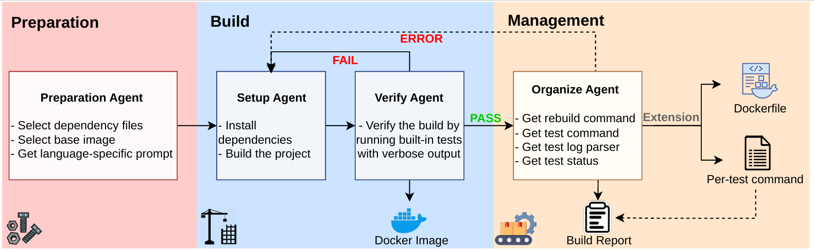

Launch your Repository
The basic workflow of RepoLaunch agent is as follows:

Trajectory & result demos of RepoLaunch agent: RepoLaunch-Trajectory-Archive.
Run RepoLaunch
We provide an example input file data/examples/dataset.jsonl and a run config data/examples/config.json in examples to help you quickly go through the launch process. Expected output files are data/examples/result.jsonl and data/examples/playground/.
Before getting started, please set your TAVILY_API_KEY environment variable. We use tavily for LLM search engine support.
export TAVILY_API_KEY=...
We use LiteLLM for max compatibility of LLM API, AND to enable custom API deployment for agentic training. Export your LLM API KEY, say OPENAI_API_KEY, ANTHROPIC_API_KEY...
export OPENAI_API_KEY=...
We have made launch/launch/utilities/llm.py compatible to both traditional completion API and OpenAI responses API.
If your llm provider requires user identity login for API usage or requires some weird settings like Gemini thinking signaturue, go to modify launch/launch/utilities/llm.py.
Start repo launch process:
launch data/examples/config.json
# equivalently: python -m launch.run --config-path data/examples/config.json
Reuse RepoLaunch results for different commits of the same repo
If your dataset to be launched contains multiple commits from the same repo, we suggest you referring to the solution in Development-agent-memory.md to launch your dataset instead of using launch data/examples/config.json directly.
Input
For the input data used to set up the environment, we require the following fields:
| Field | Description |
|---|---|
instance_id |
Unique identifier of the instance |
repo |
Full name of the repository like {user_name}/{project_name} |
base_commit |
Commit to check out |
language |
Main language of the repo |
created_at |
(Optional) Creation time of the instance, used to support time-aware environment setup, useful in Python |
hints |
(Optional) Any hints for setting up the repo you want to give the agent, such as GitHub run checks info |
Run Config
Step 1 Setup
RepoLaunch is a two step process, the first step is to setup the repo, installing dependencies, build the repo and find test cases to test the build of the repo. The following configs are required.
| Field | Type | Description |
|---|---|---|
print_to_console |
boolean | Whether to print logs to console |
model_config |
dict | Put all arguments for litellm response completion in this dict {"model": "openai/gpt-5.4", ...}. The "model" field should follow formats in litellm document, usually {provider_name}/{model_name}. Put other arguments for litellm response completion here, such as base_url, temperature, top_p. |
workspace_root |
string | Workspace folder for one run |
dataset |
string | Path to the dataset file |
instance_id |
string | Specific instance ID to run, null to run all instances in the dataset |
first_N_repos |
integer | Limit processing to first N repos (-1 for all repos) |
max_workers |
integer | Number of parallel workers for processing. Usually one worker takes 4 CPUs and 16GB RAM, so decide num of workers based on your machine specifications. |
overwrite |
boolean | Whether to overwrite existing results (false will skip existing repos) |
os |
str | Which docker image os architecture to build on. Default to linux -- use linux containers on linux machines or wsl. Can also choose: windows -- use windows containers on windows host; android -- use android containers which are built from linux containers on linux machines or wsl. |
max_trials |
integer | How many rounds of setup-verify loop agent can attempt, default 1 |
max_steps_setup |
integer | How many steps agent can attemp to setup the environment, default 20 |
max_steps_verify |
integer | How many steps agent can attemp to verify the setup, default 20 |
cmd_timeout |
integer | Time limit in minute of llm's each shell command, default 30 min. Suggested: 80 for Linux and 120 for Windows. |
image_prefix |
string | Prefix of the output_image in the format {namespace}/{dockerhub_repo}, defaults to repolaunch/dev |
Step 2 Organize
RepoLaunch also provides a second optional step to
1) Organize the commands to rebuild to repo after edits of the source code; 2) Organize the commands to test the repo with verbose testcase-status output, write a python script to parse the output into clean testcase-status mapping in JSON format: { "testcase1": "pass", "testcase2": "fail", "testcase3": "skip", }; 3) Make best effort to find the command to run a single testcase separately.
The configs required for this step:
| Field | Type | Description |
|---|---|---|
mode |
dict | default to {"setup": true, "organize": false}, set to {"setup": true, "organize": true} to do the two steps together, or set to {"setup": false, "organize": true} to do the second step separately AFTER the first step is DONE. By default the testone step in the organize stage to get the command to specify each single test to run is enabled; specify "mode": {"setup": true, "organize": true, "get_pertest_cmd": false} to disable this step in the organize stage. |
max_steps_organize |
integer | how many steps agent can attemp to organize the commands, default 20 |
Output
The per-instance output will be saved in {workspace_root}/playground/{instance_id}/result.json.
LLM API logs (input/output/token_count/cost) will be saved in {workspace_root}/playground/{instance_id}/llm/
Step 1 Setup
| Field | Description |
|---|---|
instance_id |
Unique identifier of the instance |
docker_image_layers |
{"base_image": ..., "setup_layer": list[commands]}, can convert to Dockerfile |
docker_image |
Commited Image |
setup_commands |
Records of shell commands used to set up the environment |
test_commands |
Records of shell commands used to run the tests with verbose output |
duration |
Time taken to run the process (in minutes) |
cost |
Accumulative LM API token count & cost of the setup stage |
completed |
Boolean indicating whether the execution completed successfully |
exception |
Error message or null if no exception occurred |
Summary would be saved to {workspace_root}/setup.jsonl
Step 2 Organize
The setup_commands and test_commands of the first step would be noisy, with useless error commands and exploration commands. This is why we design the second step. The second step output would add these fields:
| Field | Description |
|---|---|
docker_image_layers |
{"base_image": ..., "setup_layer": list[commands], "organize_layer": list[commands]}, can convert to Dockerfile |
organize_duration |
Time taken to run the process (in minutes) |
cost |
Accumulative LM API token count & cost of the setup stage and the organize stage, respectively |
organize_completed |
Boolean indicating whether the organization attempt completed successfully |
rebuild_commands |
Minimal commands to rebuild the repo instance |
test_commands |
Clean test commands |
parse |
python script to parse the test output intp testcase-status mapping |
test_status |
Parsed testcase-status mapping in JSON |
pertest_command |
Command to specify a testcase to run, might do not exists |
Summary would be saved to {workspace_root}/organize.jsonl